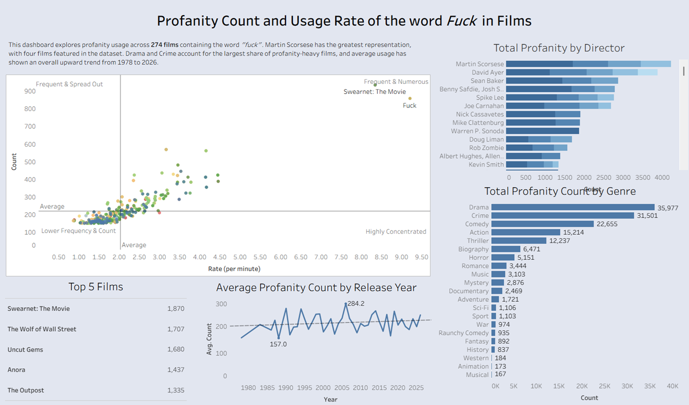

Analysis of Films Containing the Word Fuck
An interactive analysis of profanity usage across 274 films containing the word Fuck, exploring trends, genres, directors, and the films with the highest frequency of use.
Project Overview
This project analyses profanity usage in films containing the word Fuck. Using interactive Tableau visualisations, the dashboard explores how profanity varies across directors, genres, release years, and individual films, helping uncover patterns and notable outliers.
Key Highlights
- Collected and consolidated movie data from the Wikipedia API, Fandom Wiki, and IMDb datasets.
- Cleaned, transformed, and enriched the data using Python and Pandas.
- Built an interactive Tableau Public dashboard featuring dynamic filtering, dashboard actions, and calculated fields.
- Analysed profanity trends by film, director, genre, and release year to identify meaningful patterns and outliers.
